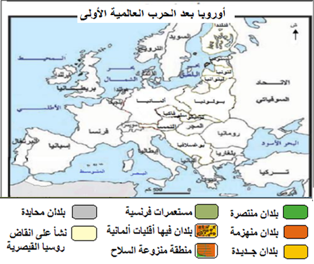
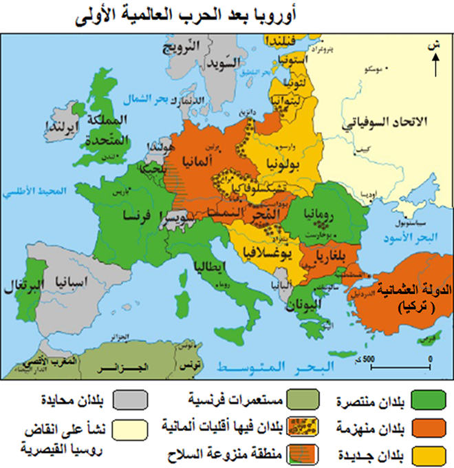

الرابعة ثانوي، شعبة الآداب
تمارين – الحرب العالمية الأولى: النتائج
1.
عرّف المصطلحات التالية: مؤتمر الصلح في باريس، معاهدة فرساي، جمعية الأمم، الانتداب.
- مؤتمر الصلح في باريس:
- انعقد عام 1919 بقصر فرساي، وهيمن عليه الأربعة الكبار (فرنسا، بريطانيا، إيطاليا، الولايات المتحدة). أقصى الدول المنهزمة وروسيا، وأسفر عن معاهدات سلام أعادت رسم خريطة أوروبا والشرق الأوسط.
- معاهدة فرساي:
- وقعت في 28 جوان 1919 مع ألمانيا، فرضت عليها شروطاً قاسية: تحميلها مسؤولية الحرب، دفع تعويضات ضخمة، فقدان أراضٍ ومستعمرات، وتقييد جيشها. اعتبرها الألمان سلاماً مذلاً ومهدت لصعود النازية.
- جمعية الأمم:
- منظمة دولية تأسست عام 1920 بموجب معاهدة فرساي، هدفها ضمان الأمن الجماعي والحد من التسلح، لكنها افتقرت إلى جيش دائم ولم تنضم إليها الولايات المتحدة، ففشلت في منع الحرب العالمية الثانية.
- الانتداب:
- نظام وصاية استعماري أقره ميثاق عصبة الأمم لإدارة الأراضي المنتزعة من الدول المنهزمة، طبق في المشرق العربي والمستعمرات الألمانية، وكان شعاره مساعدة الشعوب على الاستقلال لكنه طبق كاستعمار مقنع.
2.
أكمل الخريطة التالية: أوروبا بعد الحرب العالمية الأولى.


الخريطة المكتملة – نموذج الإجابة
3.
حوّل البيانات التالية إلى مخطط بالأعمدة: عدد القتلى (بالمليون): ألمانيا 1.8، روسيا 1.7، فرنسا 1.4، بريطانيا 0.9.
| الدولة | القتلى (مليون) |
|---|---|
| ألمانيا | 1.8 |
| روسيا | 1.7 |
| فرنسا | 1.4 |
| بريطانيا | 0.9 |
المصدر: بيانات تاريخية عن خسائر الحرب العالمية الأولى
4.
حلّل نتائج معاهدة فرساي على ألمانيا في فقرة واحدة.
تحليل:
نتائج معاهدة فرساي على ألمانيا:
- تحميل ألمانيا مسؤولية الحرب (المادة 231).
- فرض تعويضات مالية ضخمة (132 مليار مارك ذهبي).
- فقدان الألزاس واللوران وممر دانزيغ.
- تقليص الجيش الألماني إلى 100 ألف جندي.
- الشعور بالإذلال مما ساهم في صعود النازية.
فقرة:
فرضت معاهدة فرساي على ألمانيا شروطاً قاسية، إذ حمّلتها مسؤولية الحرب وأجبرتها على دفع تعويضات باهظة، كما فقدت أراضي ومستعمرات وخُفّض جيشها بشكل كبير. هذه الشروط المجحفة زرعت شعوراً عميقاً بالإذلال لدى الألمان، مما خلق أرضية خصبة لصعود الحركات المتطرفة مثل النازية لاحقاً.
5.
اكتب مقالاً قصيراً (150 كلمة) حول أسباب فشل جمعية الأمم في الحفاظ على السلام العالمي.
تحليل:
إنتاج:
رغم أهدافها النبيلة، فشلت جمعية الأمم في منع الحرب العالمية الثانية. حلّل أسباب هذا الفشل: غياب الولايات المتحدة، الافتقار إلى قوة عسكرية، شرط الإجماع، وتحولها إلى أداة بيد المنتصرين.
خطة:
- مقدمة: تقديم الجمعية كأول منظمة دولية للسلام.
- تطوير: أولاً. نقاط الضعف الهيكلية؛ ثانياً. غياب الإرادة السياسية.
- خاتمة: العجز عن منع العدوانيات أدى إلى تكرار المأساة.
مقدمة
تأسست جمعية الأمم عام 1920 بهدف ضمان الأمن الجماعي ومنع الحروب، لكنها فشلت في مهمتها، مما أدى إلى اندلاع الحرب العالمية الثانية.
تطوير
أولاً. نقاط الضعف الهيكلية
غياب الجيش
لم تمتلك الجمعية جيشاً دائماً لفرض قراراتها، واعتمدت على العقوبات الاقتصادية التي أثبتت عدم فعاليتها.
شرط الإجماع
تطلبت قراراتها الإجماع، مما جعلها عاجزة عن اتخاذ إجراءات حاسمة ضد الدول المعتدية.
ثانياً. غياب الإرادة السياسية
غياب الولايات المتحدة
رفض الكونغرس الأمريكي الانضمام إلى الجمعية، مما أفقدها ثقل أكبر قوة عالمية.
أداة المنتصرين
سيطرت الدول المنتصرة على الجمعية واستخدمتها لخدمة مصالحها، مما أفقدها مصداقيتها.
خاتمة
هكذا فشلت جمعية الأمم في تحقيق السلام بسبب عيوبها الهيكلية وغياب الإرادة الدولية، مما مهد لاندلاع حرب أكثر تدميراً.
6.
أنشئ خطاً زمنياً للأحداث التالية: معاهدة فرساي (1919)، معاهدة سان جرمان (1919)، معاهدة تريانون (1920)، معاهدة سيفر (1920)، تأسيس جمعية الأمم (1920)، معاهدة لوزان (1923).
الخط الزمني: 1919: معاهدة فرساي ...